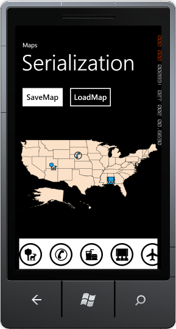
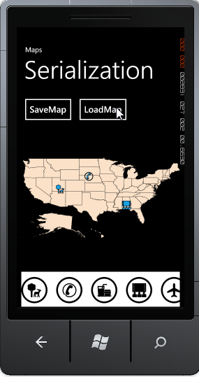

Essential Maps now supports export and import option. You can export the maps as XML file through Isolated memory. Similarly you can also import the XML file as Maps.
Use Case Scenarios
Custom modification like adding label and symbols to the map will not be saved. This feature enables you to save such modification in XML file and import it again for later reference.
Methods
Table 14: Methods Table
|
Method |
Description |
Parameters |
Type |
Return Type |
Reference links |
|
Save |
Export the maps as XML file. |
String typed file location |
NA |
none |
NA |
|
Load |
Import the maps from XML files. |
String typed file location |
NA |
none |
NA |
Export Maps as XML files
To export maps to XML file, set a XML file location as the parameter for the Save method.
The following code illustrates how to export the map as XML file:
|
[C#] this.MapControl.Save("Map.xml"); |

Figure 27: Export Map
Note: A XML file will be created in the specified location. If a file already exists it will overwrite the existing file.
Import Maps as XML files
To import maps from XML file, set the saved file location as the parameter for the Load method.
The following code illustrates how to import the map from XML file:
|
[C#]
this.MapControl.Load("Map.xml"); |

Figure 28: Import Map